平台需要一种可控的风险处置手段：当个别用户的盈利仓位给平台带来较大风险敞口时，由运营在中台对该仓位进行手动减仓。对用户侧，这笔减仓以行业通行的「ADL 自动减仓」形式呈现。
本需求包含两部分：
| 角色 | 诉求 | 本期满足方式 |
|---|---|---|
| 运营 / 风控（使用方） | 快速找到风险最高的盈利仓位，按需减掉指定数量；操作可追溯 | 持仓列表新增「ADL 档位」并支持排序；减仓弹窗张 / 币 / USDT 三种单位输入与执行预览；订单明细记录操作人 |
| 被减仓用户（影响方） | 知道仓位为什么变少、按什么价格成交、盈亏多少 | 历史委托 / 成交记录 / 仓位历史中的「ADL」标签与说明；不收手续费 |
调研对象：Binance、OKX、Bybit、Bitget（附 Gate）。来源为各家官方帮助中心与官方接口文档；界面文案未经真机截图核实。
| 维度 | 行业做法 | 本方案 |
|---|---|---|
| 事前提示 | 五家持仓上均有 5 格 ADL 指示灯 | 沿用平台现有指示灯，并作为可减门槛 |
| 仓位区事后展示 | 五家均不在剩余仓位上加标记，部分减仓只是数量变少 | 一致：不加任何标记 |
| 历史记录标识 | 四家都把 ADL 和普通平仓、强平分开标识；OKX 仓位历史区分「ADL 未全平 / 全平」 | 历史委托、成交记录、历史仓位均标「ADL」；历史仓位沿用现有按仓位聚合的展示方式 |
| 成交价 | Binance / Bybit / Gate 用破产价；OKX 通常用标记价格 | 执行时的标记价格（与 OKX 一致） |
| 手续费 | 仅 Bybit 收被减方 Maker 费，其余免收 | 不收 |
| 挂单处理 | Bybit / Gate 撤销被减用户的活动委托 | 撤销该仓位全部平仓类挂单 |
| 事后通知 | 五家至少发邮件，部分加发短信 / App 推送 | 本期不发任何通知 ⚠️ P05 后续评估邮件 |
完整调研见《ADL前端展示竞品调研.md》。
| 端 | 模块 | 功能点 |
|---|---|---|
| 中台 | 当前持仓列表 | 新增「ADL 档位」列；「未实现盈亏」「回报率」「ADL 档位」可排序；「持仓量/可平量」张 / 币 / USDT 切换；操作列新增「ADL减仓」 |
| ADL 减仓弹窗 | 仓位信息、数量输入（张 / 币 / USDT、小数、全部）、执行预览、挂单提示 | |
| 二次确认与结果 | 二次确认、执行中、成功 / 失败反馈 | |
| 订单 ID 明细 | 新增「操作人」列 | |
| 用户端（App / Web） | 当前持仓 / 当前委托 | 无新增元素：仓位数量变少或消失，平仓类挂单被撤 |
| 历史委托 / 成交记录 / 仓位历史（App：历史委托 / 交易历史 / 历史仓位） | ADL 标签 + 说明；撤单原因「因 ADL」；仓位历史区分部分 / 全部；资金流水不改动 |
| 术语 | 说明 |
|---|---|
| ADL（自动减仓） | 对用户展示的名称。本需求中实际由运营在中台手动发起。 |
| ADL 指示灯（呼吸灯）/ ADL 档位 | 平台现有的 1–5 格指示，表示仓位被 ADL 的排队位置，格数越多越靠前。灯数沿用现有计算逻辑；中台「ADL 档位」与用户端看到的格数一致。 |
| 张 / 币 / USDT | 数量的三种单位。币数量 = 张数 × 合约面值（如 BTCUSDT 1 张 = 0.0001 BTC）；USDT 数量 = 币数量 × 当前标记价格。 |
| 持仓量 / 可平量 | 可平量 = 持仓量 − 被平仓挂单占用的数量。ADL 的上限按持仓量计算。 |
| 平仓类挂单 | 该仓位上的止盈止损单、只减仓委托等平仓方向的未成交委托。 |
| 标记价格 | 平台用于计算未实现盈亏和强平的参考价格。ADL 按执行那一刻的标记价格成交。 |
| 平台账户 | 承接 ADL 所产生盈亏的平台自有账户。 |
本需求不新增计算口径，全部沿用现有《账户字段公式》，ADL 视同一次按标记价格成交、免手续费的平仓。
| 字段 | 公式 | 使用位置 |
|---|---|---|
| 单个仓位未实现盈亏 | 仓位方向 ×（标记价格 − 开仓均价）× 面值 × 张数（多 +1 / 空 −1） | 列表、弹窗、用户端持仓 |
| 平仓盈亏（本次减仓预估盈亏） | 仓位方向 ×（平仓均价 − 开仓均价）× 面值 × |张数|；ADL 平仓均价 = 执行时标记价格；手续费 0 | 弹窗「本次减仓预估盈亏」、历史委托 / 成交 |
| 已实现盈亏 | 成交差价 × 数量 − 手续费 + 资金费用（有正负号） | 列表、弹窗「减仓后预估总已实现盈亏」= 当前已实现盈亏 + 本次减仓预估盈亏 |
| 仓位价值 | 开仓价值 = 面值 × 张数 × 开仓均价（中台列表「仓位价值」）；当前仓位价值 = 面值 × 张数 × 标记价格（弹窗「剩余持仓价值」、单位选 USDT 时的持仓量、列表单位选 USDT 时的持仓量） | 列表、弹窗 |
| 仓位本金 / 仓位保证金 | 全仓 = 张数 × 面值 × 开仓均价 / 杠杆；逐仓 = 逐仓保证金（逐仓余额） | 列表「仓位保证金」、收益率分母 |
| 收益率 | 持仓收益率 = 未实现盈亏 / 仓位本金；平仓收益率（历史页）= 仓位已实现盈亏 / 仓位本金 | 列表「回报率」、用户端持仓、历史仓位 |
| 减仓时逐仓保证金转出 | 转出 = min（A，B，减仓前仓位保证金） A = max【仓位保证金 × 减仓仓位价值 / 减仓前仓位价值 + 方向 × 减仓张数 × 面值 ×（平仓均价 − 开仓均价），0】 B = max【减仓前仓位保证金 + 方向 × 剩余张数 × 面值 ×（标记价格 − 开仓均价）− 剩余张数 × 面值 × 标记价格 / 杠杆，0】 | 逐仓 ADL 执行后的保证金与资金去向 |
| 预估强平价 | 逐仓 =【逐仓余额 /（面值 × |张数|）− 方向 × 持仓均价】/（维持保证金率 + 爆仓手续费率 − 方向） 全仓（多仓位）=【（钱包余额 − Σ逐仓余额 + 其他仓位未实现盈亏）/（面值 × |张数|）− 方向 × 持仓均价】/（维持保证金率 + 爆仓手续费率 − 方向） 破产价格：同上，维持保证金率取 0；价格不存在时显示「--」 | 列表「强平价格」「破产价格」、用户端持仓 |
| 保证金率（逐仓） | （逐仓余额 + 未实现盈亏）/（面值 × |张数| × 标记价格 ×（维持保证金率 + 爆仓手续费率）） | 用户端持仓 |
由公式得出的两条结论：
维持保证金率、爆仓手续费率取各合约现有配置（原型示例值：0.5% / 0.06%）。
| # | 规则 | 台账 |
|---|---|---|
| 1 | 可减条件：ADL 指示灯亮满 5 格 且 未实现盈亏 > 0，两个条件同时满足 | R13 |
| 2 | 成交价：执行时的实时标记价格（不是运营打开弹窗时的价格） | R04 |
| 3 | 被减部分不产生对手仓位，系统直接结算平仓，盈亏由平台账户承接 | R03 |
| 4 | 被减仓用户不收手续费 | R12 |
| 5 | 已实现盈亏立即计入交易账户钱包余额；逐仓按「减仓时逐仓保证金」规则转出的保证金立即回到全仓可用 | R16 / R22 |
| 6 | 执行后撤销该仓位全部平仓类挂单 | R14 |
| 7 | 数量上限 = 执行时的持仓量；超出报错、不执行；同一仓位可多次减仓 | R13 / R17 |
| 8 | 数量支持张 / 币 / USDT 切换与小数；张、币的小数位数沿用各合约现有数量精度配置，USDT 按当前标记价折算为张数后执行 | R07 / R18 |
| 9 | 单人操作，无需复核，不填减仓原因；追溯依赖订单明细「操作人」 | R05 / R10 / R11 |
| 10 | 不限定使用场景 | R15 |
| 11 | 用户端仓位区不加任何 ADL 标记；不发站内信 | R08 / R09 |
| 12 | 用户端 ADL 数量统一用币单位显示（如 0.01 BTC） | R19 |
一期上线本文全部范围（中台 + App + Web 同步）。邮件通知（P05）视上线后客服咨询量再评估。
| 编号 | 端 | 功能 | 类型 | 优先级 |
|---|---|---|---|---|
| F1 | 中台 | 持仓列表新增「ADL 档位」列（可排序） | 新增 | P0 |
| F2 | 中台 | 操作列新增「ADL减仓」按钮及可点条件 | 新增 | P0 |
| F3 | 中台 | ADL 减仓弹窗：仓位信息、数量输入、执行预览、挂单提示 | 新增 | P0 |
| F4 | 中台 | 二次确认、执行与结果反馈 | 新增 | P0 |
| F5 | 中台 | 订单 ID 明细新增「操作人」列 | 调整 | P0 |
| F6 | 中台 | 「未实现盈亏」「回报率」支持排序 | 调整 | P1 |
| F7 | 中台 | 「持仓量/可平量」张 / 币 / USDT 切换，「自动减仓量」跟随 | 调整 | P1 |
| F8 | App / Web | 历史委托、成交记录显示「ADL」标签及说明 | 新增 | P0 |
| F9 | App / Web | 历史仓位：发生过 ADL 的仓位显示「ADL」标签 | 新增 | P0 |
| F10 | App / Web | 被撤挂单显示「已撤销 · 因 ADL」 | 新增 | P0 |
原型地址：1009-中台ADL减仓.html（顶部可切换「中台」与「用户端 · App + Web」）。
中台样式规范（取色自现有中台页面，浅色 / 深色两套主题）：主操作蓝 #526FFF（深色 #4961DB，用于「查询」「确认减仓」、链接、选中态、分页当前页、弹窗标题下划线）；「指标编辑」紫 #8E63DF；「导出」青绿 #0FB4A0；「平仓」/「确认执行」红 #F83F62（深色 #DE3356）；「重置」/「取消」/「返回修改」灰底（浅 #EEF2F5 / 深 #1F1F1F）。新增的「ADL减仓」按钮使用中台现有的橙色 #F39A37（与「张」单位同色），置灰态为 40% 透明度。涨 / 盈利 / 多仓为青绿 #0FB4A0，跌 / 亏损 / 空仓为紫 #8E63DF；ADL 指示灯点亮色 #40A0D0。页面框架沿用现有筛选区、表格与分页器（原型左侧导航仅保留「当前持仓列表」）。
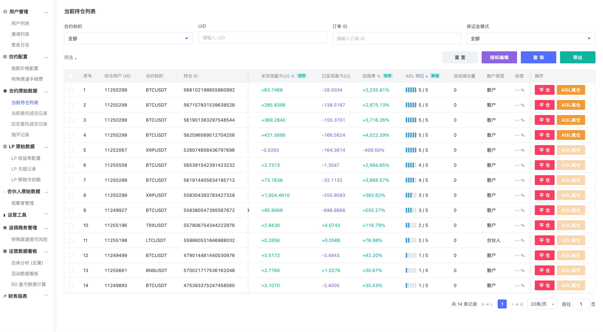
| 区域 | 元素 | 说明 |
|---|---|---|
| 筛选区 调整 | 合约标的 / UID / 持仓 ID、重置 / 指标编辑 / 查询 / 导出 | 「订单 ID」筛选改为「持仓 ID」（按持仓 ID 模糊匹配）；删除「保证金模式」筛选；其余不变。 |
| 列表 | 「持仓量/可平量」调整 | 表头有单位下拉框（张 / 币 / USDT），默认张。切到币时显示币数量（如 0.0108 / 0.008 BTC）；切到 USDT 时按当前标记价格折算显示（如 260.74 / 260.74 USDT）。「自动减仓量」列跟随同一单位；订单 ID 明细不跟随。 |
| 「未实现盈亏」「回报率」调整 | 点表头排序：降序 → 升序 → 再次点击切回降序。 | |
| 「ADL 档位」新增 | 位于「回报率」之后。显示 5 格竖条 + 「x / 5」，格数与用户端指示灯一致；可排序。 | |
| 「自动减仓量」（已有） | 该仓位累计被 ADL 减掉的数量，每次执行成功后累加。 | |
| 其余列 | 不变。 | |
| 操作列 | 「平仓」 | 不变。 |
| 「ADL减仓」新增：可点 | 指示灯亮满 5 格 且 未实现盈亏 > 0。 | |
| 「ADL减仓」：置灰 | 悬浮提示按原因区分：灯未亮满 →「ADL 指示灯亮满 5 格的仓位才可执行 ADL 减仓」；亮满但未实现盈亏 ≤ 0 →「该仓位未实现盈亏 ≤ 0，不可执行 ADL 减仓」。 |
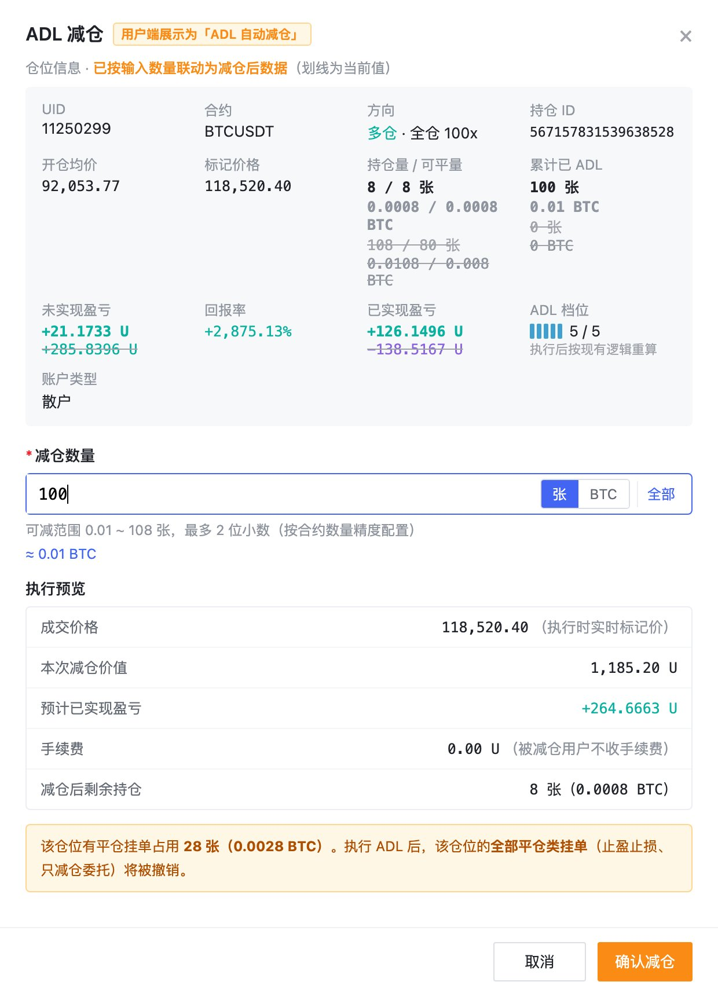
| 区域 | 元素 | 说明 |
|---|---|---|
| 标题 | 「ADL 减仓」 | — |
| 当前仓位（操作前，只读） | UID、合约、方向（多 / 空 · 保证金模式 · 杠杆）、持仓 ID、开仓均价、标记价格、持仓量 / 可平量、累计已 ADL（不单独展示仓位价值：单位选 USDT 时持仓量即为按标记价格计算的当前仓位价值）（持仓量 / 可平量与累计已 ADL 的单位跟随下方减仓数量的单位下拉；打开弹窗时默认与列表所选单位一致）、未实现盈亏、回报率、已实现盈亏、ADL 档位（不显示账户类型） | 固定展示操作前的数据，输入数量后不变；减仓前后的变化统一在「执行预览」中对比展示。 |
| 减仓数量 | 输入框（必填） | 可输入整数或小数。 |
| 单位下拉（张 / 币 / USDT） | 下拉框，「币」选项显示合约币种（如 BTC）。选 USDT 时，按输入时的标记价格折算为张数，并向下取整到合约张数精度，执行时按折算后的张数减仓；因此实际成交价值可能略小于输入的 USDT。输入框下方提示「按当前标记价折算为 8.43 张（0.000843 BTC）执行，实际减仓价值 99.91 USDT」，预览中「本次减仓价值」显示折算后的值。USDT 最多 2 位小数；折算后不足最小张数时提示「按当前标记价折算不足最小数量」。⚠️ P21 折算规则与 USDT 精度待确认默认跟随列表当前单位。切换后，上方仓位信息中的持仓量 / 可平量、累计已 ADL 同步切换单位，输入框占位文字同步为「请输入要减仓的张数 / 请输入要减仓的 BTC 数量」。切换时，已输入的合法数值自动换算（如 50.5 张 ⇄ 0.00505 BTC）。 | |
| 「全部」 | 按当前单位填入全部持仓量。 | |
| 范围提示 | 「可减范围 最小单位 ~ 持仓量，最多 N 位小数（按合约数量精度配置）」。 | |
| 换算提示 | 输入合法时显示另一单位的换算值，如「≈ 50.5 张」。 | |
| 执行预览 | 本次减仓（输入合法数量后显示，否则显示「--」） | |
| 成交价格 | 当前标记价格，注明「执行时实时标记价」。 | |
| 本次减仓数量 | 固定显示「张（币）」，如「10 张（0.001 BTC）」；不随输入单位变化，避免选 USDT 时与「本次减仓价值」重复。 | |
| 本次减仓价值 | 减仓数量 × 合约面值 × 当前标记价格（U）。 | |
| 本次减仓预估盈亏 | 被减部分按当前标记价格估算的盈亏，正绿负紫。 | |
| 手续费 | 固定 0，注明「被减仓用户不收手续费」。 | |
| 减仓后预估（每行显示「当前 → 减仓后」，如持仓 108 张 → 8 张；未输入时减仓后显示「--」） | ||
| 剩余持仓 / 剩余持仓价值 | 剩余持仓固定显示「张（币）」；减完显示「0（全部平掉）」。剩余持仓价值 = 剩余数量 × 合约面值 × 当前标记价格（U）。 | |
| 减仓后未实现盈亏 / 减仓后预估总已实现盈亏 | 未实现盈亏按剩余仓位比例计算；总已实现盈亏 = 当前已实现盈亏 + 本次减仓预估盈亏。 | |
| 挂单提示 | 黄色提示条 | 仅当该仓位有平仓挂单占用时显示：「该仓位有平仓挂单占用 X 张（Y BTC）。执行 ADL 后，该仓位的全部平仓类挂单将被撤销。」 |
| 按钮 | 取消 / 确认减仓 | 数量合法前「确认减仓」不可点。 |
价格口径：执行预览中的价格统一取标记价格——打开弹窗时取实时标记价格并随行情刷新；实际执行按点击「确认执行」那一刻的标记价格成交（R04），因此实际结果可能与预览略有差异。数量统一先折算为币数量参与计算（币数量 = 张数 × 面值）。
| 区域 | 字段 | 公式 | 对应《账户字段公式》 |
|---|---|---|---|
| 本次减仓 | 本次减仓价值 | 减仓张数 × 面值 × 标记价格 | 当前仓位价值 |
| 本次减仓预估盈亏 | 仓位方向 ×（平仓均价 − 开仓均价）× 面值 × 减仓张数；平仓均价 = 标记价格；手续费 0，不扣减 | 平仓盈亏 | |
| 减仓后预估 （当前 → 减仓后） | 剩余持仓 | 当前持仓张数 → 当前持仓张数 − 减仓张数 | — |
| 剩余持仓价值 | 当前：持仓张数 × 面值 × 标记价格 → 减仓后：剩余张数 × 面值 × 标记价格 | 当前仓位价值 | |
| 减仓后未实现盈亏 | 当前：仓位方向 ×（标记价格 − 开仓均价）× 面值 × 持仓张数 → 减仓后：同式，张数取剩余张数 | 单个仓位未实现盈亏 | |
| 减仓后预估总已实现盈亏 | 当前已实现盈亏 → 当前已实现盈亏 + 本次减仓预估盈亏 | 已实现盈亏（= 成交差价 × 数量 − 手续费 + 资金费用，当前值已含历史手续费与资金费） |
计算示例（BTCUSDT 多仓，仓位方向 +1；面值 0.0001 BTC / 张；持仓 22 张 = 0.0022 BTC；开仓均价 89,544.60；标记价格 118,520.40；当前已实现盈亏 −28.0034 U；减仓 10 张 = 0.001 BTC）：
| 字段 | 代入 | 结果 |
|---|---|---|
| 本次减仓价值 | 10 × 0.0001 × 118,520.40 | 118.52 U |
| 本次减仓预估盈亏 | (+1) ×（118,520.40 − 89,544.60）× 0.0001 × 10 = 28,975.80 × 0.001 | +28.9758 U |
| 剩余持仓 | 22 → 22 − 10 | 0.0022 BTC → 0.0012 BTC |
| 剩余持仓价值 | 22 × 0.0001 × 118,520.40 → 12 × 0.0001 × 118,520.40 | 260.74 U → 142.22 U |
| 减仓后未实现盈亏 | 28,975.80 × 0.0022 → 28,975.80 × 0.0012 | +63.7468 U → +34.7710 U |
| 减仓后预估总已实现盈亏 | −28.0034 → −28.0034 + 28.9758 | −28.0034 U → +0.9724 U |
校验关系：未实现盈亏的减少额（63.7468 − 34.7710 = 28.9758）= 本次减仓预估盈亏，即减仓只是把浮盈转为实盈，总盈亏不变。测试可据此校验。
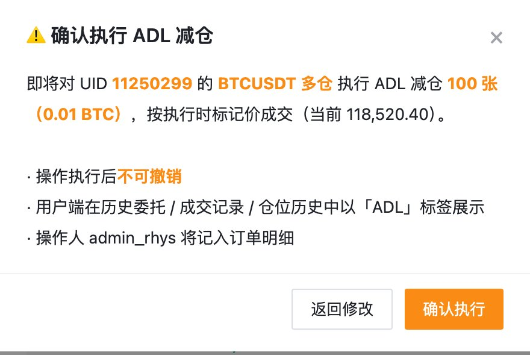
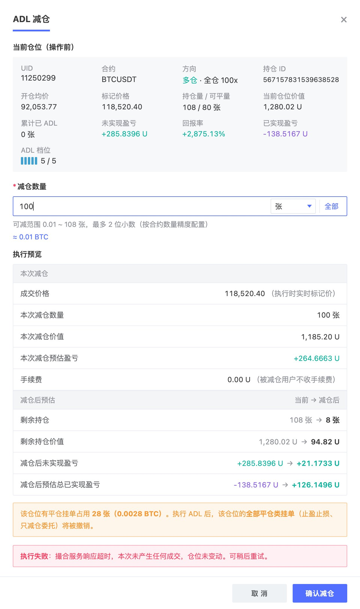
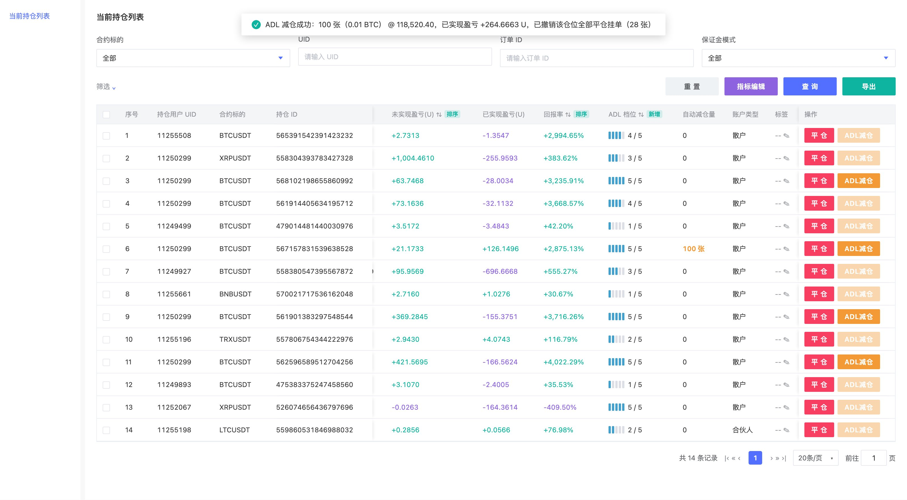
| 状态 | 表现 |
|---|---|
| 二次确认 | 文案：「即将对 UID xxx 的 BTCUSDT 多仓执行 ADL 减仓 100 张（0.01 BTC）（全部平仓时追加『全部平仓』），按执行时标记价成交（当前 xxx）。」不附加其他说明。按钮：返回修改 / 确认执行。 |
| 执行中 | 「确认执行」显示加载并禁用，防止重复提交。 |
| 成功 · 部分减仓 | 关闭弹窗，顶部提示「ADL 减仓成功：100 张（0.01 BTC）@ 成交价，已实现盈亏 +xx U（有挂单时追加『已撤销该仓位全部平仓挂单（X 张）』）」。该行高亮闪烁，持仓量、可平量、自动减仓量、已实现盈亏、更新时间同步刷新。 |
| 成功 · 全部减仓 | 提示「……仓位已全部平掉，已从当前持仓移除」，该行从列表消失。 |
| 失败 · 数量大于当前持仓量 | 弹窗内红色提示：「执行失败：减仓数量 X 大于该仓位当前持仓量 Y（仓位在此期间已变动），本次未执行。请重新输入。」弹窗信息刷新为最新持仓。 |
| 失败 · 仓位已不存在 | 关闭弹窗，提示「该仓位已不存在（已被用户平仓或强平），列表已刷新，本次未执行」。 |
| 失败 · 系统异常 | 弹窗内红色提示：「执行失败：系统响应超时，本次未产生任何成交，仓位未变动。可稍后重试。」 |
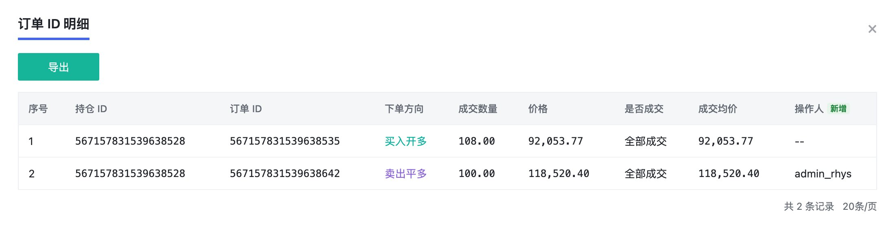
| 元素 | 说明 |
|---|---|
| 现有列 | 序号 / 持仓 ID / 订单 ID / 下单方向 / 成交数量 / 价格 / 是否成交 / 成交均价，全部保持现状。ADL 记录的下单方向沿用现有值（卖出平多 / 买入平空），价格与成交均价为执行时标记价格。 |
| 「操作人」新增 | ADL 减仓记录显示执行的运营账号；用户自己下的单显示「--」。 |
App · 合约页持仓区（ADL 前 → 部分 ADL 后 → 全部 ADL 后；虚线框为变化项，原型标注，非实际 UI）＋ App · 交易记录（部分 ADL 后：历史委托 / 历史仓位 / 交易历史 / 资金流水）
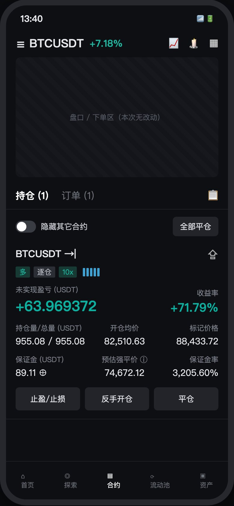
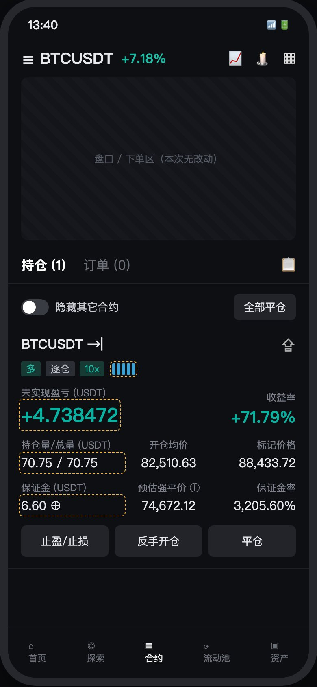
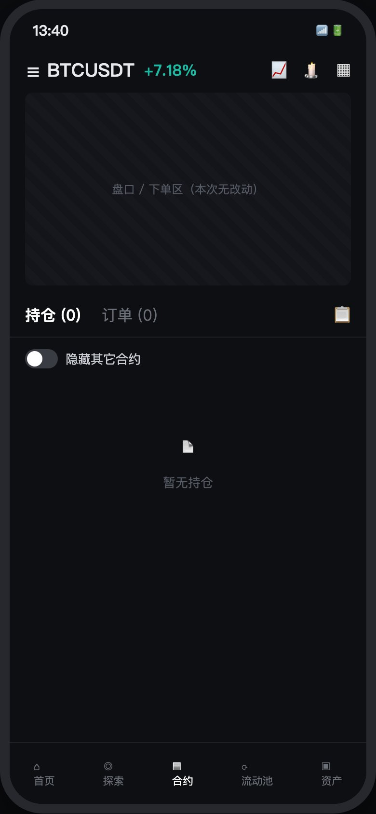
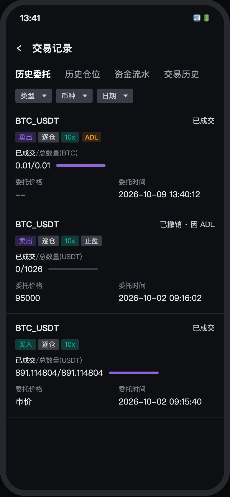
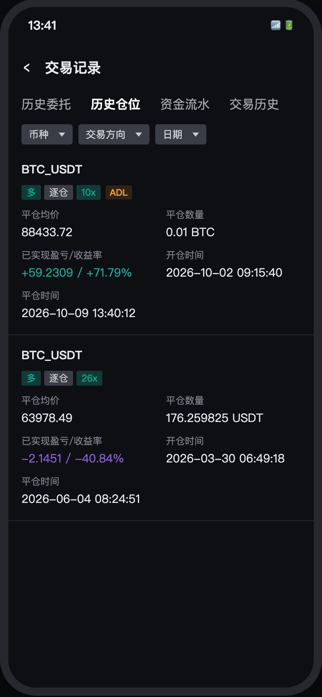
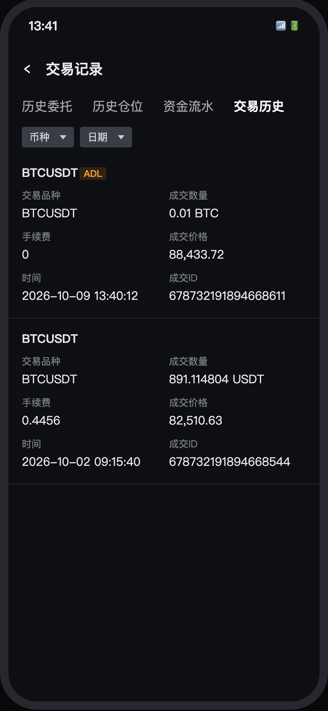
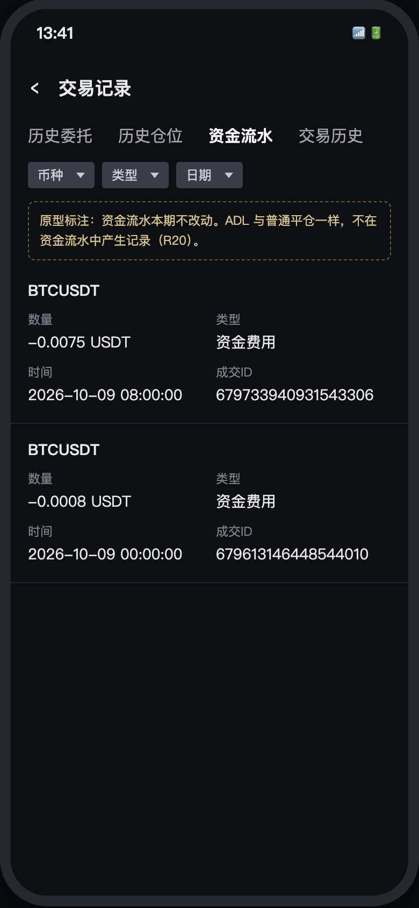
Web · 合约页仓位区（页签：当前持仓 / 当前委托 / 历史仓位 / 历史委托〔限价&市价 · 止盈止损 · 计划委托〕/ 资金流水 / 历史成交）
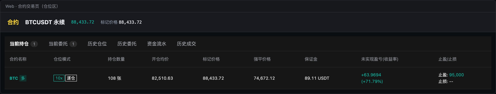
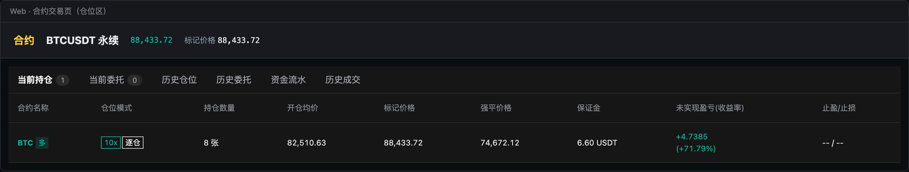
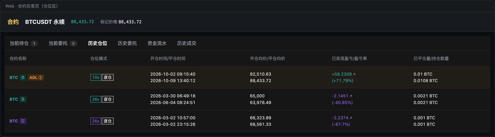
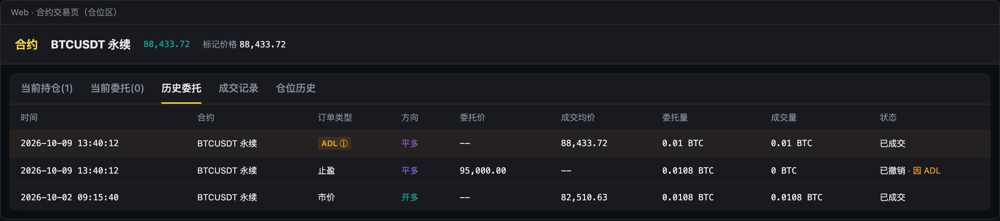
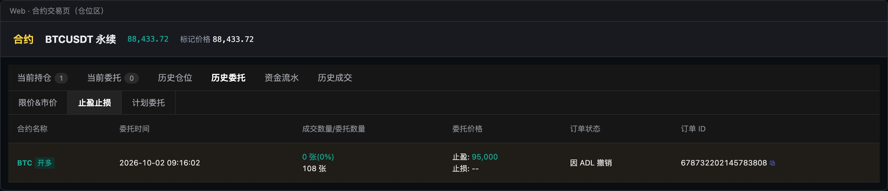
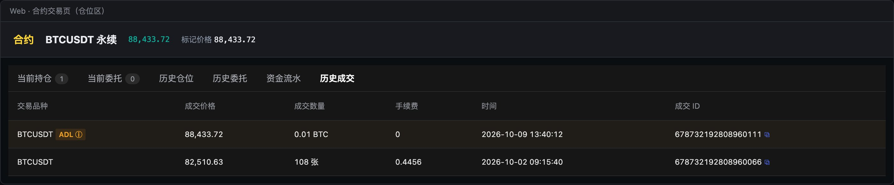
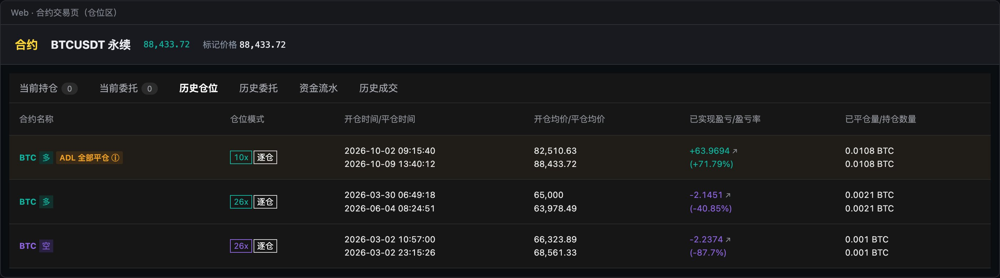
App 与 Web 规则一致，页面名称不同：App「交易记录」页的页签为 历史委托 / 历史仓位 / 资金流水 / 交易历史，Web 为 历史仓位 / 历史委托（限价&市价 · 止盈止损 · 计划委托）/ 资金流水 / 历史成交。以下以一笔 0.0108 BTC 的多仓被减 0.01 BTC 为例。ADL 记录中的数量统一用币单位（R19）；同页其他记录保持各端现有单位（App 现有为 USDT）。
| 位置 | 部分 ADL 后 | 全部 ADL 后 |
|---|---|---|
| 当前持仓 | 仓位仍在，数量变为 0.0008 BTC。开仓均价不变；未实现盈亏按剩余张数计算；逐仓保证金按转出规则变为 2.34 U，收益率、预估强平价、保证金率随之重算（见 2.4）。不加任何 ADL 标记。指示灯按现有逻辑重新计算。 | 仓位消失；无其他仓位时显示「暂无持仓」。 |
| 当前委托 | 只撤销被减仓位自己的平仓类挂单（该仓位的止盈止损、只减仓委托、平仓方向的限价单与计划委托），委托数相应减少；同合约的开仓挂单、其他合约 / 其他仓位的挂单全部保留，因此 ADL 后当前委托不一定为 0。平仓挂单按《账户字段公式》定义：标的相同（合仓模式下杠杆也需相同），多仓 + 卖出（平多）或空仓 + 买入（平空）。原型示例中该用户只有一张止盈单，所以显示 1 → 0。 | |
| 历史委托 | App：新增一张卡片，标题 BTC_USDT，状态「已成交」；标签「卖出（平多）/ 买入（平空）· 逐仓 / 全仓 · 杠杆 · ADL」；「已成交/总数量(BTC)」如 0.01/0.01，进度条满；委托价格「--」；委托时间为执行时间。被撤的平仓挂单状态显示「已撤销 · 因 ADL」。 Web：「限价&市价」子页签新增一行：合约名称「BTC 平多 / 平空」，订单类型「ADL」标签，成交数量/委托数量如「0.01 BTC(100%) / 0.01 BTC」，成交均价为执行时标记价格，触发条件、委托价格「--」，平仓盈亏为本次已实现盈亏，手续费 0，订单状态「全部成交」。被撤的止盈止损单在「止盈止损」子页签中，订单状态显示「因 ADL 撤销」（与现有「用户撤销」并列）。「计划委托」不改动。 | |
| 交易历史（App）/ 历史成交（Web） | App：卡片标题 BTCUSDT 旁加「ADL」标签；交易品种、成交数量（如 0.01 BTC）、手续费 0、成交价格（执行时标记价格）、时间、成交ID。 Web：交易品种 BTCUSDT 旁加「ADL」标签；成交价格为执行时标记价格；成交数量如 0.01 BTC；手续费 0；时间、成交 ID。 | |
| 历史仓位（App / Web） | 沿用现有展示方式：一个仓位对应一条记录，每次平仓（含 ADL）后更新这一条——已平仓量累加、平仓均价按加权平均重算、已实现盈亏累加、平仓时间更新为最近一次平仓时间；部分平仓也会展示。发生过 ADL 的仓位，在 Web 合约名称旁 / App 标签行显示「ADL」标签。示例（部分 ADL 后）：开仓时间 2026-10-02 09:15:40 / 平仓时间 2026-10-09 13:40:12，已平仓量 / 持仓数量 0.01 BTC / 0.0108 BTC，已实现盈亏 +59.2309（+71.79%）。 | |
| 资金流水（App / Web） | 不改动。ADL 与普通平仓一样，不在资金流水中产生记录（R20）。 | |
| 「ADL」标签说明 | Web 鼠标悬浮 / App 点击「ADL」标签时显示：「自动减仓（ADL）：系统按标记价格减少您的部分或全部仓位，本次减仓不收取手续费，减仓后您可随时重新开仓。」⚠️ P17 文案待确认 | |
| 通知 | 本期不发站内信、邮件、短信、推送 ⚠️ P05 | |
| # | 场景 | 系统行为 | 依据 |
|---|---|---|---|
| 1 | 指示灯未亮满 5 格 | 「ADL减仓」置灰，悬浮提示灯数要求 | R13 |
| 2 | 亮满 5 格但未实现盈亏 ≤ 0（含恰好为 0） | 置灰，悬浮提示未实现盈亏要求 | R13 |
| 3 | 数量为空 | 「确认减仓」不可点 | — |
| 4 | 输入非数字、0 或负数 | 提示「请输入大于 0 的数字」/「减仓数量须大于 0」 | — |
| 5 | 小数位数超过合约精度 | 提示「张数最多支持 N 位小数」或「BTC 数量最多支持 N 位小数」 | R18 |
| 6 | 数量 > 持仓量（输入时） | 提示「超过当前持仓量 X」，不可提交 | R17 |
| 7 | 数量恰好 = 持仓量 | 允许；二次确认标注「全部平仓」；成功后仓位从列表移除，用户端历史仓位该条记录带「ADL」标签，已平仓量 = 持仓数量 | — |
| 8 | 数量 > 可平量但 ≤ 持仓量 | 允许；执行前撤销全部平仓类挂单 | R14 / R17 |
| 9 | 仓位有平仓挂单，减仓数量 ≤ 可平量 | 仍撤销该仓位全部平仓类挂单 | R14 |
| 9-0 | 持仓 100 张、平仓挂单 50 张，ADL 30 张（小于挂单量） | 50 张平仓挂单全部撤销；剩余持仓 70 张，可平量 70 张 | R14 |
| 9-0a | 同上，ADL 50 张（等于挂单量） | 50 张平仓挂单全部撤销；剩余持仓 50 张，可平量 50 张 | R14 |
| 9-0b | 同上，ADL 80 张（大于挂单量） | 50 张平仓挂单全部撤销；剩余持仓 20 张，可平量 20 张 | R14 |
| 9-1 | 同一合约还有开仓挂单（如限价开多 80,000），或其他合约有挂单 | 不撤销，继续有效 | R14 |
| 10 | 打开弹窗后用户自行平仓或另一运营已减，执行时数量 > 当前持仓量 | 报错、不执行，弹窗刷新为最新持仓 | R17 |
| 11 | 打开弹窗后仓位被平掉 / 强平 | 提示仓位已不存在，刷新列表，不执行 | — |
| 12 | 打开弹窗时满足条件，执行时灯数掉到 4 格或未实现盈亏 ≤ 0 | 推荐：执行时再检查一次，不满足则报错「仓位已不满足 ADL 条件」，不执行 | ⚠️ P14 |
| 13 | 仓位正处于强平流程中，或合约处于暂停交易 / 结算 / 下架状态 | 推荐：拒绝执行，提示「当前仓位 / 合约状态不支持 ADL 减仓」 | ⚠️ P15 |
| 14 | 系统异常 / 超时 | 不产生成交，仓位不变，可重试 | — |
| 15 | 重复点击「确认执行」 | 执行中按钮禁用，只提交一次 | — |
| 16 | 同一仓位多次 ADL | 允许；每次生成独立的委托和成交记录，「自动减仓量」累计 | R13 |
| 17 | 同一仓位既有 ADL 又有用户自己的平仓 | 历史仓位仍为一条聚合记录（数量、均价、盈亏合并计算）；只要该仓位发生过 ADL 就显示「ADL」标签 | ⚠️ P18 |
| 18 | 双向持仓，同一合约同时有多仓和空仓 | 按持仓 ID 分别判断、分别操作，互不影响 | R01 |
| 19 | 逐仓仓位被部分 ADL | 按「减仓时逐仓保证金」规则转出 min（A，B，减仓前保证金），已实现盈亏计入钱包余额；剩余仓位保证金可能大幅减少、强平价靠近标记价格（见 2.4 示例） | R16 / R22 |
| 20 | 全仓仓位被部分 ADL | 已实现盈亏计入钱包余额、立即可用；同账户其他仓位预估强平价不变，被减仓位强平价远离标记价格 | R16 / R22 |
| 21 | 标记价格在打开弹窗到执行之间变化 | 以执行那一刻的标记价格成交；预览值仅供参考 | R04 |
| 22 | 被全部 ADL 的用户想立即重新开仓 | 不做任何限制，沿用现有开仓逻辑 | — |
| 23 | 切换单位时输入框为空或数值非法 | 只切换单位，不换算 | R07 |
| 24 | 以 USDT 输入，例如 100 USDT（标记价 118,520.40） | 折算为 8.43 张（向下取整），实际减仓价值 99.91 U；输入金额恰好等于全部持仓价值时按全部持仓量处理 | ⚠️ P21 |
| 25 | 以 USDT 输入的金额折算后不足 0.01 张 | 提示「按当前标记价折算不足最小数量 0.01 张」，不可提交 | ⚠️ P21 |
| # | 端 | 事件 | 触发时机 | 上报参数（业务描述） |
|---|---|---|---|---|
| E1 | 中台 | 持仓列表排序 | 点击「未实现盈亏」「回报率」「ADL 档位」表头 | 排序字段、排序方向、操作人 |
| E2 | 中台 | 列表单位切换 | 切换「持仓量/可平量」表头的单位下拉（张 / 币 / USDT） | 切换后的单位、操作人 |
| E3 | 中台 | 打开 ADL 减仓弹窗 | 点击可点状态的「ADL减仓」 | UID、合约、方向、持仓 ID、ADL 档位、未实现盈亏、回报率、持仓量、操作人 |
| E4 | 中台 | 悬浮置灰按钮 | 鼠标悬停在置灰的「ADL减仓」上 | 持仓 ID、置灰原因（灯数不足 / 未实现盈亏 ≤ 0） |
| E5 | 中台 | 弹窗内单位切换 | 切换弹窗中的单位下拉（张 / 币 / USDT） | 持仓 ID、切换后的单位、切换时是否已有输入 |
| E6 | 中台 | 点击「全部」 | 点击弹窗中的「全部」 | 持仓 ID、当前单位 |
| E7 | 中台 | 提交减仓 | 点击「确认减仓」进入二次确认 | 持仓 ID、输入数量、单位、是否全部减仓、是否有平仓挂单 |
| E8 | 中台 | 二次确认操作 | 点击「返回修改」或「确认执行」 | 持仓 ID、选择结果 |
| E9 | 中台 | ADL 执行结果 | 执行完成（成功或失败） | 持仓 ID、UID、合约、结果、失败原因（超持仓量 / 仓位不存在 / 条件不满足 / 状态不支持 / 系统异常）、成交数量、成交价、已实现盈亏、撤销挂单数量、是否全部减仓、操作人、耗时 |
| E10 | 中台 | 取消弹窗 | 点击「取消」/ 关闭弹窗 | 持仓 ID、是否已输入数量 |
| E11 | App / Web | 查看 ADL 说明 | Web 悬浮 / App 点击「ADL」标签的 ⓘ | 端、所在页面（历史委托 / 成交记录 / 仓位历史）、UID |
| E12 | App / Web | 浏览含 ADL 记录的历史页 | 打开历史委托 / 成交记录 / 仓位历史，且列表中有 ADL 记录 | 端、页面、UID、ADL 记录条数 |
以下为建议的接口变动，字段名仅作示意，以研发定稿为准。
adlLevel（1–5，取现有 ADL 指示灯计算结果，与用户端一致）。unrealizedPnl / roe / adlLevel，方向 asc / desc。contractSize（合约面值）与 qtyPrecision（张数精度，取合约现有配置），供前端做张 / 币 / USDT 换算与小数校验（USDT 还需当前标记价格）。adlEnabled（是否可点）及 adlDisabledReason（LEVEL_NOT_5 / PNL_NOT_POSITIVE），服务端统一判断。positionId、quantity（统一以「张」提交，前端负责币 / USDT → 张换算并按精度取整；USDT 按输入时标记价格折算、向下取整）。操作人从登录态获取。adlLevel == 5 且未实现盈亏 > 0（P14）→ quantity > 0 且符合精度 → quantity ≤ 当前持仓量。ADL_CANCEL）→ 以执行时标记价格生成系统平仓单并成交（来源 ADL，operator = 运营账号，手续费 0）→ 释放保证金与已实现盈亏入交易账户 → 平台账户记录对应盈亏（无对手仓位）。QTY_EXCEEDS_POSITION、POSITION_NOT_FOUND、ADL_CONDITION_NOT_MET、POSITION_STATUS_NOT_ALLOWED、INVALID_QTY、SYSTEM_ERROR。operator：ADL 订单为运营账号，用户订单为空（前端显示「--」）。其余字段不变。ADL，前端据此显示「ADL」标签；ADL 成交的 fee = 0，role 为空。ADL_CANCEL，前端显示「已撤销 · 因 ADL」。ADL_PARTIAL（部分减仓）/ ADL_FULL（全部平仓）。contractSize 由前端换算，统一以币单位展示。| 编号 | 事项 | 推荐 | 影响章节 |
|---|---|---|---|
| P05 | 是否发邮件 / 短信 / App 推送（站内信已确定不发） | 暂不发，上线后看客服咨询量再评估 | 1.3、3.3.5 |
| P14 | 执行时灯数不足 5 格或未实现盈亏 ≤ 0，是继续执行还是报错 | 报错拒绝 | 3.4 #12、5.2 |
| P15 | 仓位强平中、合约暂停交易 / 结算 / 下架时能否执行 | 拒绝执行 | 3.4 #13、5.2 |
| P16 | 哪些中台角色能看到和使用「ADL减仓」 | 与现有「平仓」按钮权限一致 | 3.3.1 |
| P17 | 用户端「ADL」标签的说明文案 | 见 3.3.5，需 PM / 客服确认 | 3.3.5 |
| P18 | 同一仓位既有 ADL 又有普通平仓时，历史仓位的「ADL」标签规则 | 只要发生过 ADL 即显示 | 3.4 #17 |
| P21 | USDT 输入的折算规则：按输入时标记价格折算为张数并向下取整、执行按张数；USDT 保留 2 位小数 | 按左侧规则 | 3.3.2、3.4 #24–25、5.2 |
| 版本 | 日期 | 阶段 | 变更摘要 |
|---|---|---|---|
| V1.0 | 2026-10-09 | 初稿（评审前） | 基于原型与规则台账 v1.0（R01–R19）产出完整 PRD |
| V1.1 | 2026-10-09 | 初稿（评审前） | 3.3 全部截图占位替换为原型截图（图 1–14）；文档主题色改为淡紫色 |
| V1.2 | 2026-10-11 | 初稿（评审前） | 涨跌色改为中台 / 主站绿涨紫跌，ADL 指示灯改为主站色；减仓弹窗去掉「对手方」字段；输入数量后上方仓位信息联动为减仓后数据；截图全部重截 |
| V1.3 | 2026-10-11 | 初稿（评审前） | 减仓弹窗删除标题标签与联动提示行；输入数量后直接显示减仓后数值，不再划线展示原值；持仓量 / 可平量、累计已 ADL 按列表所选单位显示；图 2、图 4 重截 |
| V1.4 | 2026-10-11 | 初稿（评审前） | 二次确认弹窗删除三条说明（不可撤销 / 用户端展示方式 / 操作人记录）；图 3 重截 |
| V1.5 | 2026-10-11 | 初稿（评审前） | 中台原型按现有中台页面重做样式（左侧导航、按钮与文字取色、分页器、浅 / 深两套主题），补充「中台样式规范」；「确认减仓」改主色蓝、「确认执行」改平仓红；图 1–6 重截 |
| V1.6 | 2026-10-11 | 初稿（评审前） | 原型左侧导航只保留「当前持仓列表」；图 1、图 5 重截 |
| V1.7 | 2026-10-11 | 初稿（评审前） | 减仓弹窗：仓位信息中的持仓量 / 可平量、累计已 ADL 改为跟随减仓数量的单位切换；输入框占位文字随单位变化 |
| V1.8 | 2026-10-12 | 初稿（评审前） | App 历史按现有「交易记录」页重做（历史委托 / 历史仓位 / 资金流水 / 交易历史，卡片样式与筛选项对齐现有页面）；资金流水明确不改动、ADL 不产生流水记录；5.5 删除「用户流水新增 ADL 类型」；新增图 10-1～10-3 |
| V1.9 | 2026-10-12 | 初稿（评审前） | Web 仓位区按现有页面重做（当前持仓 / 当前委托 / 历史仓位 / 历史委托〔限价&市价 · 止盈止损 · 计划委托〕/ 资金流水 / 历史成交）；被撤止盈止损单状态改为「因 ADL 撤销」；Web 截图扩为图 11–17 |
| V2.0 | 2026-10-12 | 初稿（评审前） | 中台筛选「订单 ID」改「持仓 ID」、删除「保证金模式」；减仓弹窗删除「账户类型」；列表与弹窗单位改为下拉框并新增 USDT（按标记价折算，新增 P21）；图 1、2、4、5 重截 |
| V2.1 | 2026-10-12 | 初稿（评审前） | 减仓弹窗重新整理：上方固定为「当前仓位（操作前）」；执行预览分「本次减仓」（成交价、数量、价值、本次减仓预估盈亏、手续费）与「减仓后预估」（剩余持仓、剩余持仓价值、减仓后未实现盈亏、减仓后预估总已实现盈亏，均以「当前 → 减仓后」展示）；图 2、图 4 重截 |
| V2.2 | 2026-10-12 | 初稿（评审前） | 历史仓位改为沿用现有按仓位聚合的展示方式（部分平仓也展示、平仓时间为最近一次），ADL 统一显示「ADL」标签，取消「ADL 部分减仓 / 全部平仓」区分；P18 改为标签规则；图 10-1、13、17 重截 |
| V2.3 | 2026-10-12 | 初稿（评审前） | 减仓弹窗「当前仓位（操作前）」新增「仓位价值」；图 2、图 4 重截 |
| V2.4 | 2026-10-13 | 初稿（评审前） | 新增 2.4「计算口径」，全部沿用《账户字段公式》；原型数值改按公式计算（仓位价值、仓位保证金、收益率、强平价、破产价、逐仓保证金转出、保证金率）；关闭 P07（全仓其他仓位强平价不变）；补充逐仓 ADL 后强平价靠近标记价格的结论；图重截 |
| V2.5 | 2026-10-13 | 初稿（评审前） | 新增 3.3.2-1「执行预览计算公式与示例」：逐字段公式、价格口径（标记价格）、BTCUSDT 计算示例与校验关系 |
| V2.6 | 2026-10-13 | 初稿（评审前） | 减仓弹窗「仓位价值」更名为「当前仓位价值」（按标记价格），与列表按开仓均价计算的「仓位价值」区分；图 2、图 4 重截 |
| V2.7 | 2026-10-13 | 初稿（评审前） | 减仓弹窗删除「当前仓位价值」：单位选 USDT 时与持仓量重复；需要看金额时切换到 USDT 单位；图 2、图 4 重截 |
| V2.8 | 2026-10-13 | 初稿（评审前） | 执行预览中「本次减仓数量」「剩余持仓」固定显示「张（币）」，避免 USDT 单位下与价值字段重复；USDT 输入时明确提示折算后的张数与实际减仓价值 |
| V2.9 | 2026-10-13 | 初稿（评审前） | 明确 ADL 撤单范围：只撤被减仓位的平仓类挂单，开仓挂单及其他仓位挂单保留（3.3.5「当前委托」、3.4 新增 #9-1） |
| V3.0 | 2026-10-13 | 初稿（评审前） | 维持 R14「ADL 后撤销被减仓位全部平仓类挂单」，3.4 补充小于 / 等于 / 大于挂单量三种情况；版本历史删除「变更原因」列 |